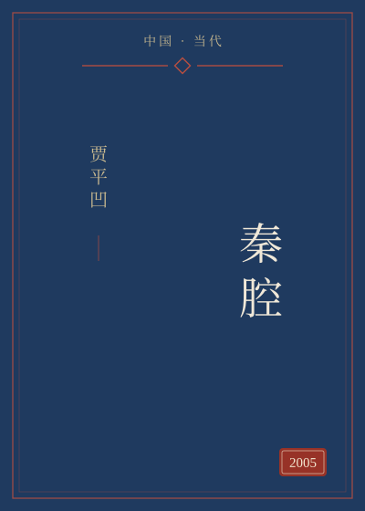
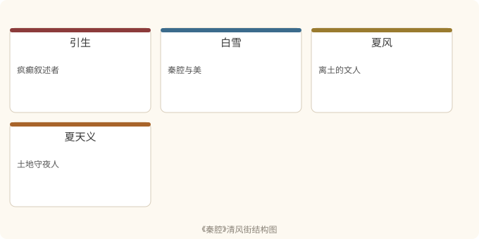

秦腔
一、基本信息
| 作者 | 贾平凹 |
|---|---|
| 成书/出版 | 2005年出版（英文维基：Qin Qiang (秦腔, 2005)；首刊《收获》说通说待核）；2008年获第七届茅盾文学奖（英文维基） Jia Pingwa — Wikipedia (EN)（百科全书） |
| 国别/地区 | 中国 |
| 时代 | 现当代 · 当代 |
| 体裁 | 长篇小说 |
| 语言 | 汉语（白话·秦地方言） |

《秦腔》清风街结构图（主题·结构图）
二、创作背景
英文维基：《秦腔》为 a challenging work incorporating elements of local Shaanxi operas（融入秦地戏曲元素）；2008年茅奖（winner of the 2008 Mao Dun Literature Prize）、2006年首届红楼梦奖（英文维基）。
题材：改革开放后清风街的乡土衰落——农民离土、秦腔式微（通说）。
三、内容脉络
引生（疯癫叙述者）与白雪、夏风：清风街二十年日常（通说）。
夏家四代人的分化与土地的荒芜；秦腔班社的解散（通说）。
四、主要人物表
| 人物 | 身份 | 说明 |
|---|---|---|
| 引生 | 疯子叙述者 | 自残式的痴情者（通说） |
| 白雪 | 秦腔演员 | 传统之美的化身 |
| 夏风 | 进城文人 | 离乡的成功者 |
| 夏天义 | 老农 | 土地的守夜人（通说） |
五、主题与艺术特点
- 乡土中国的挽歌：农民与土地关系的解体（通说）。
- 秦腔即文化之根：戏曲式微即乡土式微（通说）。
- 疯癫叙事：引生的痴与真（通说）。
六、影响与评论
- 英文维基：2008年第七届茅盾文学奖、2006年首届红楼梦奖双料得主。
Jia Pingwa — Wikipedia (EN)（百科全书） - 英文维基：贾平凹为『中国最受欢迎的作者之一』（one of China's most popular authors）。
Jia Pingwa — Wikipedia (EN)（百科全书）
七、阅读建议
难点
- 密实流水账式日常——『鸡零狗碎』的泼烦日子（通说）。
- 陕南方言与秦腔戏文。
- 《秦腔》（作家出版社，通说待核）。
对照《白鹿原》《平凡的世界》：乡土叙事三巨头。
八、待核实
- 《收获》2005年首发细节待核。
- 茅奖届次与颁奖年份（2008年颁）核对。
- 清风街原型（棣花街说——作者自述）待核。
本页主要来源
贾平凹的其他收录作品：秦腔